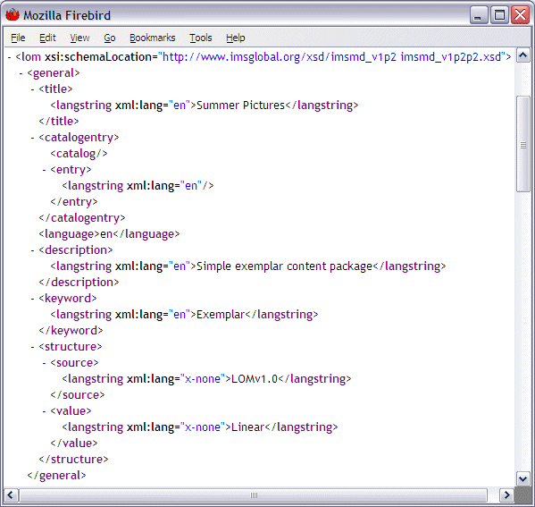

Creating a Standalone Metadata File
Although primarily a content package editor, the RELOAD Editor incorporates a fully fledged metadata editor and can be used to create and view metadata files which are independent of content.
To create a new Metadata file, Click File, New > IMS 1.2.2 Metadata File. A new blank metadata file is created and you can choose the desired application profile by clicking on the drop-down list.
Add Metadata as before using the form view or tree view (or a combination) until all necessary entries have been completed. Then click File, Save As ... to open the Save dialog box. Enter a filename, and retain the .xml suffix. Save the file somewhere convenient. You can view the file in a web browser, where you will see that it is a valid IMS Metadata v1.2.2 record.
